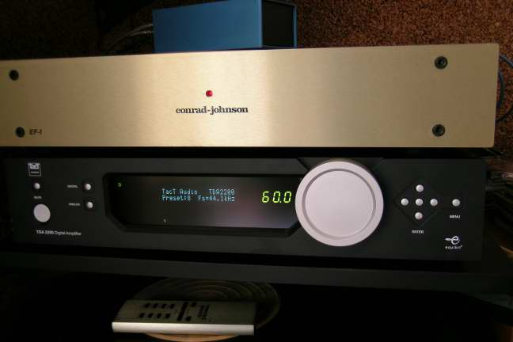

(from the 11/03/06 email)
Digital Amplifiers
Dear audiophile friends,
it is a lot of time that I don't disturb you. That's because I think that there is too much spam and confusion in the audio comunity.Anyway, I want to break my silence, because I have made a new audio experience, which I consider interesting also for you.

A friend of mine have bought a digital amplifier and he gave it to me for a one-day test. The ampli is the TACT TDA2200, see the attach. It is a really DIGITAL ampli, meaning that it reads the digital output of a CD-player and gives as output the analog power signal directly to the loudspeakers. All controls are in the digital domain (including the volume and eventual equalizations) and only "at the end" an analog signal is generated modulating the main power with the audio signal. But I don't want to tell you how it works (look http://www.tactaudio.dk), but only how good it sounds!Well, the first thing that impressed me is the level of resolution. I have listened something similar only once in my life: when I have audictioned the ELP turntable. Not only there are "much more things" than ever, but also they are sculptured in a perfect soundstage, which is really big in space. After the resolution and the soundstage, the third impressive characteristic is the ability to make my little babies (ProAC Response 1S) sound so "big" and "deep". I always thought that a 13cm woofer can't produce such "big bass" like bigger speakers but... in my small room the TACT was able to do the miracle.
Yep, I have tried it also with my Kuzma turntable. In fact, the model bought by my friend has also the A/D optional interface. Well, probably the sound was not so "perfect" as with the digital input, but it was still better than my CJ tube combo in many parameters. May be the worst things about the TACT was a less sweet high frequencies, but it may be due to the limits of my cartridge (a Denon 103, because my Koetsu and Benz are on a retip holiday). Perhaps a sound little more "warm" should improve the TACT to heaven.
Alltogheter, it seems to me that the digital technology is finally ready to fight with the best tube amplifiers. It is no more the time to play with the super T-amp and other toys: here there is a really high-end ampli wich costs as a good EL34 push-pull, but has greater resolution and the dynamic of a 200W reservoir. Said in other words, for the price of a good CD D/A converter (and the EquiBit *is* a good converter!) they give you "in bundle" also an amplifier! Ehi, a new star is rising in the audiophile sky!
My congrats to the TACT/Lyngdorf engeegners (when they will put also a RIAA equalization inside the TACT 2200?)!
Tino © May 2007